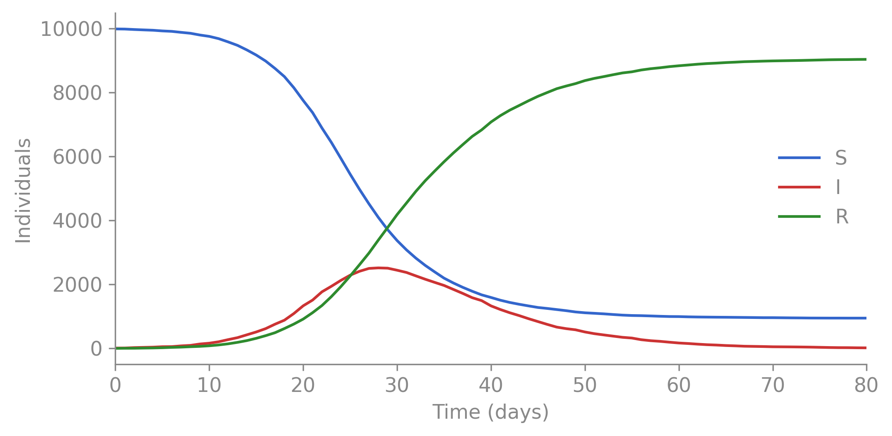
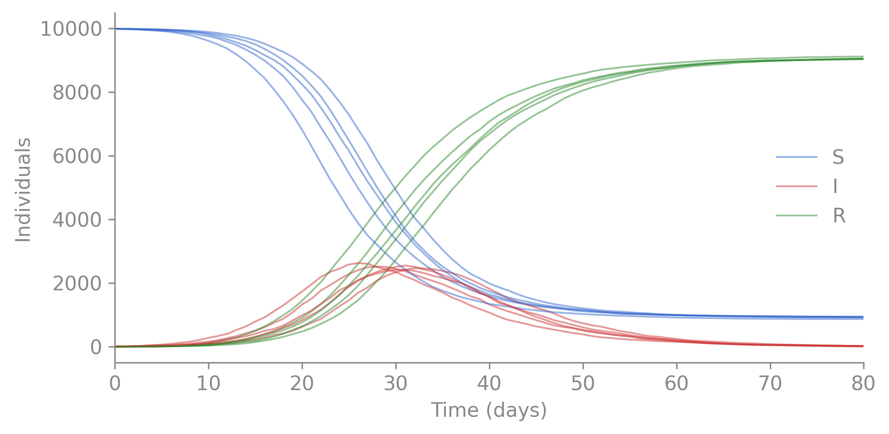
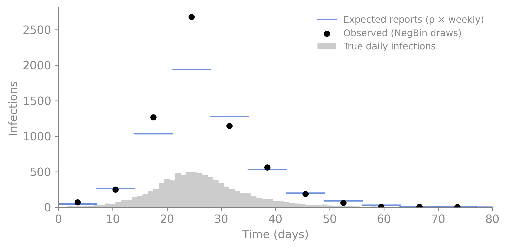

camdl (the Compartmental Model Description Language, pronounced “cam-dee-ell”, or just rhymes with “candle” is a domain-specific language for stochastic epidemiological compartmental models. Like SQL for databases, camdl separates the scientific declaration of a model from the code that implements it. The math is the model — what you write in a .camdl file is designed to read like the model specification and equations you’d put on a whiteboard. Other modeling frameworks often force you to write code that blends the declaration of the scientific model with implementation code; camdl keeps intentionally keeps them apart. Moreover, camdl has a compiler that actually checks the semantics and validity of your scientific model before simulating from it, which eliminates whole classes of bugs that come from writing code that blends the scientific model with the computational implementation.
The SIR model divides a population into three compartments: Susceptible individuals who can catch the disease, Infected individuals who can transmit it, and Removed individuals who have recovered (or died) and play no further role. Susceptibles become infected at a propensity proportional to the contact rate \(\beta\) between \(S\) and \(I\); infected individuals recover at a constant per-capita rate \(\gamma\). Thus, two parameters govern the dynamics: the transmission rate \(\beta\) and the recovery rate \(\gamma\). We write out both the model dynamic equations and camdl code below (don’t fret if you don’t follow the math notation):
compartments { S, I, R }parameters { beta : rate gamma : rate N0 : count I0 : count}let N = S + I + Rtransitions {infection : S --> I @ beta * S * I / Nrecovery : I --> R @ gamma * I}init { S = N0 - I0 I = I0}
That’s the complete camdl code for an SIR model! Let’s run it, then walk through what each piece does. In your terminal, create a file sir.camdl and paste the code above into it. Then, run the model with some parameters:
import polars as plimport matplotlib.pyplot as plt# df = pl.read_csv("output.tsv", separator="\t") # from: camdl simulate sir.camdl ...fig, ax = plt.subplots(figsize=(7, 3.5))for col, color in [("S", "#3366cc"), ("I", "#cc3333"), ("R", "#2e8b2e")]: ax.plot(df["t"], df[col], color=color, label=col, linewidth=1.5)ax.set_xlabel("Time (days)")ax.set_ylabel("Individuals")ax.legend(frameon=False)ax.set_xlim(0, df["t"].max())ax.spines[["top", "right"]].set_visible(False)plt.tight_layout()plt.show()

Figure 2.1: A single stochastic SIR trajectory. S declines as infection spreads, I rises and falls, R accumulates.
In 16 lines of camdl, we defined stochastic SIR epidemic. The rest of this chapter explains what those 16 lines mean, why camdl is syntax is designed this way, and additional model language features that lead to better readability, correctness, and easier downstream inference when we don’t know the parameters and want to fit the model to data.
Compartments — defining what exists
A key unifying feature of many epidemological models is to take the immense complexity of human immunity and disease progression and reduce it to a few discrete states that capture the key epidemiological dynamics. The compartments block defines these states. In SIR, there are three compartments,
compartments { S, I, R }
These three compartments are integer counts that partition the population’s immunological states at any given time. The camdl simulation runtime advances the epidemic by moving individuals between these compartments according to the transitions we’ll define shortly — but first, we need to declare the model’s parameters.
Parameters
A camdl model separates the model structure (compartments, transitions, observation process) from the model parameterization (the specific numeric values that govern its behavior). The parameters block declares what the model’s degrees of freedom are — the knobs you turn. By design, camdl does not support default values in the parameters block. You always supply parameter values externally, either through a TOML file or at the command line. This keeps the model definition clean: the .camdl file says what the model is, not what any particular run of it looks like.
This is an intentional design choice borrowed from the Stan ecosystem’s philosophy. As Betancourt (2018) puts it:
[Principled modeling choices are] informed by sincere and careful deliberation, in contrast to choices informed by unquestioned defaults that have ossified into convention.
Default parameters in scientific software create implicit assumptions that silently propagate when models are shared, adapted, or applied to new pathogens. Stan’s developers learned this the hard way from BUGS and JAGS, where example models used vague priors like dnorm(0, 0.001) that users cargo-culted without understanding their implications (Gelman, 2006; Carpenter et al., 2017). When camdl refuses to simulate without a value for \(\gamma\), it’s forcing a choice you’d have to make anyway — and making that choice visible to anyone who reads the model.
Every parameter in camdl has a type that says what kind of quantity it is. These parameter types serve two purposes: they document the mathematical and scientific meaning of the parameter (e.g., it helps readers understand and better intuit a model if they can see that beta is a rate and rho is a probability), and the type tells the compiler what values are correct versus incorrect. For example, a rate can’t be negative, a probability can’t be 1.5, and a count can’t be 3.7.
The compiler enforces these constraints, and during inference, camdl uses these parameter types to choose the right parameter transform (log for rates, logit for probabilities) so the sampler explores an unconstrained space while the model always sees valid values.
Here is a parameter block with types:
parameters { beta : rate# ≥ 0, units of 1/time gamma : rate# ≥ 0, units of 1/time N0 : count# non-negative integer I0 : count# non-negative integer}
There are four built-in parameter types in camdl:
Table 2.1: Parameter types and their domains.
Type
Domain
Example use
rate
\([0, \infty)\)
transmission, recovery
probability
\([0, 1]\)
reporting fraction
positive
\((0, \infty)\)
\(R_0\), dispersion
count
\(\{0, 1, 2, \ldots\}\)
population, initial seed
You’ll see more on why this matters in Your First Fit; getting the types right means camdl can fit your model without you having to think about parameter transforms — the compiler naturally knows what is best to use as a result of the parameter you declare.
Bounds
Types constrain the domain; bounds narrow it further for a specific model. beta : rate means “non-negative.” Adding in [0.01, 2.0] means “non-negative, and for this model we only consider values between 0.01 and 2.0.” Often you have scientific knowledge that rules out certain parameter values, and adding bounds helps the compiler and inference algorithms focus on the relevant region of parameter space (which can greatly improve model fitting performance). Bounds also serve as documentation for readers, showing the range of plausible values, in much the same way that parameter types do.
Bounds are optional for simulation-only models, but required for inference — they define the feasible region the fitting algorithms search over.
Unit literals
A pervasive source of bugs in epidemic modeling (and scientific software more generally) is unit mismatch. By design, camdl supports unit annotations on numeric literals, and the compiler automatically converts between units to match the model’s time_unit (which is by default the 'day but can be configured in the .camdl file).
For example, suppose a paper reports a mortality rate of 20 per 100,000 per year. You type 0.0002 thinking “per day,” but you forgot to divide by 365… or are there 365.25 days in a year to handle leap years? Or is it 365.2425? These are the type of subtle, difficult-to-spot bugs that come from manual unit conversion and cause serious problems.
To prevent these issues, camdl supports unit literals — tick-prefixed annotations like 'days, 'weeks, 'per_day, 'per_year — that tell the compiler what units a number is in. The compiler converts everything to the model’s time_unit automatically. Our initial SIR model omitted the time_unit declaration (it defaults to 'days), but here’s how unit literals work in practice:
time_unit = 'days# A paper reports mortality as 20 per 100,000 per year.# Parentheses apply the unit to the whole expression.let mu : rate = (20 / 100_000) 'per_yearsimulate {from = 0'daysto = 12'weeks# compiler converts: 84 days}observations {cases : { projected = incidence(infection)every = 1'weeks# weekly reporting ... }}
(20 / 100_000) 'per_year and 0.000000548 'per_day are the same rate — the compiler handles the conversion, and the unit annotation documents where the number came from. The parentheses matter: a unit literal binds to the number immediately before it, so 20 / 100_000 'per_year would apply 'per_year only to 100_000, not to the whole expression. The compiler catches this and tells you to add parentheses.
Numeric literals also support underscore separators for readability — write 100_000 instead of 100000. The compiler even warns you if your grouping looks like a typo:
warning[W100]: suspicious digit grouping in '10_00' (group widths: 2, 2) — did you mean 1000? Use 3-digit groups: 1_000, 10_000, 1_000_000
┌─ sir.camdl:10:12
│
10│ init { S = 10_00 }
│ ~~~~^ │
Transitions — what happens
Transitions are events that move individuals between compartments. Each transition event has three parts: a label (infection), an arrow (S --> I) naming the source and destination compartments, and a propensity (@ beta * S * I / N) that defines the expected number of events per unit time across the entire population.
transitions {infection : S --> I @ beta * S * I / Nrecovery : I --> R @ gamma * I}
The syntax of camdl is designed to make these expressions easy to read and understand — especially useful as models get longer and more complex. We can read each line as a sentence: “an infection event moves individuals from S to I at propensity \(\beta S I / N\)”; “a recovery event moves individuals from I to R at propensity \(\gamma I\).”
Propensity, not rate
This is the most important concept in camdl. The expression after @ is the propensity — the total expected number of events per unit time across the entire population. It is not the per-capita rate.
Table 2.2: Decomposing propensities into per-capita rates and populations at risk.
Transition
Per-capita rate
× Population at risk
= Propensity
infection
\(\beta I/N\)
\(S\)
\(\beta S I / N\)
recovery
\(\gamma\)
\(I\)
\(\gamma I\)
camdl never silently multiplies by a population count (an explicit design philosophy of camdl is that in scientific model building, explicit is safer, and thus better, than implicit). You write the multiplication explicitly. This eliminates a common source of modeling bugs: ambiguity about whether a “rate” is per-capita or total.
Some frameworks have you specify per-capita rates and the engine multiplies by the source population internally. In camdl, what you write is what you get. The @ expression is the propensity.
Let bindings — names for expressions
let N = S + I + R
This looks like a variable assignment but it isn’t. let creates a named expression — the compiler substitutes S + I + R everywhere N appears, so it’s re-evaluated with the current compartment values at every simulation step.
N always reflects the current population because the substituted expression is re-evaluated at every simulation step. If an individual moves from S to I, N stays the same (closed population) but I/N changes. Remember: let bindings are live expressions, not cached values.
A second example for readability:
let foi = beta * I / N # force of infectiontransitions {infection : S --> I @ foi * S}
foi isn’t computed once — it’s a name for the expression beta * I / N, evaluated fresh every time it appears.
Initial conditions
Every compartment starts with individuals assigned to various states at time zero. The init block defines these initial conditions. You can specify an initial values through integers,
init { S = N0 - I0 I = I0}
or you can use fractional parameters when absolute counts aren’t known. This is common in practice — a paper might report that 3% of the population was susceptible at the start of an outbreak, not that exactly 297 individuals were. In camdl, you’d write:
import polars as plimport matplotlib.pyplot as pltfig, ax = plt.subplots(figsize=(7, 3.5))colors = {"S": "#3366cc", "I": "#cc3333", "R": "#2e8b2e"}for i, d inenumerate(multi.partition_by("replicate")):for col, color in colors.items(): ax.plot(d["t"], d[col], color=color, alpha=0.5, linewidth=1, label=col if i ==0elseNone)ax.set_xlabel("Time (days)")ax.set_ylabel("Individuals")ax.legend(frameon=False)ax.set_xlim(0, d["t"].max())ax.spines[["top", "right"]].set_visible(False)plt.tight_layout()plt.show()

Figure 2.2: Five stochastic SIR trajectories from different seeds. Same parameters, different realizations of the stochastic process.
This is the stochastic process from §1 of the inference guide. The latent state you never observe directly.
Scenarios — named presets for simulation
In epidemiological modeling, we often want to simulate under counterfactual scenarios that differ in their parameters from some baseline situation (i.e. the status quo under no interventions). For example, we might want to compare how peak infection incidence would differ if school closure policy reduced transmission in younger age groups.
In camdl, named parameter presets and modifications for baseline and various scenarios are defined in the scenarios block. Note that earlier, we said that camdl does not support default parameter values, and it seems like having a scenario with a preset parameters contradicts this. However, it is important to clarify the difference here, as it reveals camdl’s intentional design to avoid common mistakes with default parameters, yet still provide the convenience of named parameter sets for simulation.
The distinction is that the parameters block defines the model’s degrees of freedom — the knobs you turn to specify a particular run of the model, and that may be the focus of estimation or inference from observed data. Importantly, when a user runs a simulation without specifying a scenario, camdl will error out and ask the user to specify parameters explicitly through the file or command line argument, rather than silently falling back to any defaults. Moreover, if a user does not provide all parameters, they will get an error, which forces them to make explicit choices about the parameters for that simulation run. This design choice is intentional to prevent modeling mistakes that can arise from implicit defaults.
But, sometimes a researcher will want to package a set preset parameters together within the .camdl model file under a named scenario for teaching purposes or reproducibility. These can be defined in the scenarios block, which is separated from the parameters so that no silent, accidental fallback to a default parameter can occur without the user explicitly selecting a scenario. For example, we can define a “baseline” scenario (there is nothing special about this name, it’s just convention):
There’s no silent fallback: omit --scenario and camdl demands --params or --param as before. Moreover, all scenarios are deliberately walled off from inference; the fitting pipeline ignores them entirely, drawing its parameters from the fit configuration file instead (and parameters fixed during inference must be explicitly stated as such). Scenarios are for reproducible simulation; inference has its own explicit parameter specification.
Scenarios become much more powerful when combined with interventions and counterfactual comparisons; we will cover those in a later chapter.
Observations — connecting your model to data
So far, the model describes how an epidemic unfolds. But we don’t observe the S, I, and R trajectories directly. What we actually get from a surveillance system is noisy, delayed, and incomplete: weekly case reports where only a fraction of infections are caught, and the counts bounce around from week to week even when the underlying epidemic is smooth. The observations block describes this measurement process — the pipeline that stands between the true epidemic and your data.
In our SIR model, the true number of infections each week is tracked by incidence(infection) — the flow accumulator counting S → I events since the last observation time. But surveillance systems don’t report every infection. A fraction \(\rho\) of cases are reported, and the counts are overdispersed — some weeks more cases are caught than expected, some weeks fewer. The neg_binomial likelihood captures both effects: the mean is \(\rho\) times the true incidence, and the dispersion parameter \(k\) controls how noisy the observations are around that mean.
This runs the same stochastic simulation and then draws from the neg_binomial likelihood at each observation time, writing the synthetic data to cases.tsv. The trajectory output is unchanged — the observation RNG is seeded independently, so adding --obs produces byte-identical trajectories.
The three-layer plot below shows exactly what this pipeline does to the signal. The light grey bars are the true daily infections — what actually happened in the simulation. The stepped blue line is the expected weekly report after applying the reporting fraction \(\rho\) (here 0.6, so 60% of cases are reported). The black dots are the synthetic observations generated by --obs — negative binomial draws around that expected value, with dispersion \(k = 10\). This is the information loss that inference must invert.
Plotting code
import polars as plimport matplotlib.pyplot as pltimport numpy as np# Generate synthetic observations from the observation model_, obs_df = run_sim(seed=42, obs=True)# Daily new infections (flow_infection is already per-step)daily_infections = df["flow_infection"]# Aggregate to weeklyweeks = (df["t"] //7).cast(pl.Int64)weekly = ( df.with_columns(daily_infections.alias("new_infections"), weeks.alias("week")) .group_by("week") .agg(pl.col("new_infections").sum()) .sort("week"))# Expected reports (rho from params.toml)rho =0.6true_weekly = weekly["new_infections"].to_numpy().astype(float)expected = rho * true_weekly# Observed counts from camdl --obs (NegBin draws from the observation model)# Drop the t=0 row (before the first observation window completes)obs_df = obs_df.filter(pl.col("time") >0)observed = obs_df["weekly_cases"].to_numpy()obs_times = obs_df["time"].to_numpy()fig, ax = plt.subplots(figsize=(7, 3.5))# Layer 1: true daily incidenceax.bar(df["t"], daily_infections, width=1, color="#cccccc", edgecolor="none", label="True daily infections", zorder=1)# Layer 2: expected weekly reports (stepped)for i inrange(len(weekly)): x0 = weekly["week"][i] *7 x1 = x0 +7 ax.plot([x0, x1], [expected[i], expected[i]], color="#3366cc", linewidth=1.5, alpha=0.7, label="Expected reports (ρ × weekly)"if i ==0elseNone, zorder=2)# Layer 3: observed draws from camdl --obsax.scatter(obs_times -3.5, observed, color="black", s=25, zorder=3, label="Observed (NegBin draws)")ax.set_xlabel("Time (days)")ax.set_ylabel("Infections")ax.legend(frameon=False, fontsize=9)ax.set_xlim(0, df["t"].max())ax.spines[["top", "right"]].set_visible(False)plt.tight_layout()plt.show()

Figure 2.3: The observation pipeline: true daily infections (grey bars) are aggregated weekly, scaled by the reporting fraction ρ (blue step), and then scattered by negative binomial noise (black dots). Given only the black dots, the fitting algorithms must recover the underlying epidemic.
camdl supports multiple observation streams in a single model — for example, weekly case counts from one surveillance system and wastewater viral load from another. Each stream gets its own name, accumulator, and likelihood. We’ll see examples of this in later chapters.
This is the observation pipeline that inference must invert. Given only the black dots, the fitting algorithms in the next chapter will try to recover \(\beta\), \(\gamma\), and \(\rho\).
The complete first model
time_unit = 'dayscompartments { S, I, R }parameters { beta : ratein [0.05, 1.0] gamma : ratein [0.01, 0.5] N0 : count I0 : count rho : probabilityin [0.1, 0.9] k : positivein [1.0, 100.0]}let N = S + I + Rtransitions {infection : S --> I @ beta * S * I / Nrecovery : I --> R @ gamma * I}init { S = N0 - I0 I = I0}observations {weekly_cases : { projected = incidence(infection)every = 7'dayslikelihood = neg_binomial(mean = rho * projected, r = k) }}simulate {from = 0'daysto = 80'days}
30 lines. A stochastic SIR with typed parameters and a statistical observation model. In the next chapter, you’ll generate synthetic data from this model and fit it.
What’s next
Your First Fit — generate synthetic data and recover the parameters with IF2.
Later: dimensions and stratification add age groups, spatial patches, and contact matrices.
Later: interventions and scenarios for counterfactual comparison.